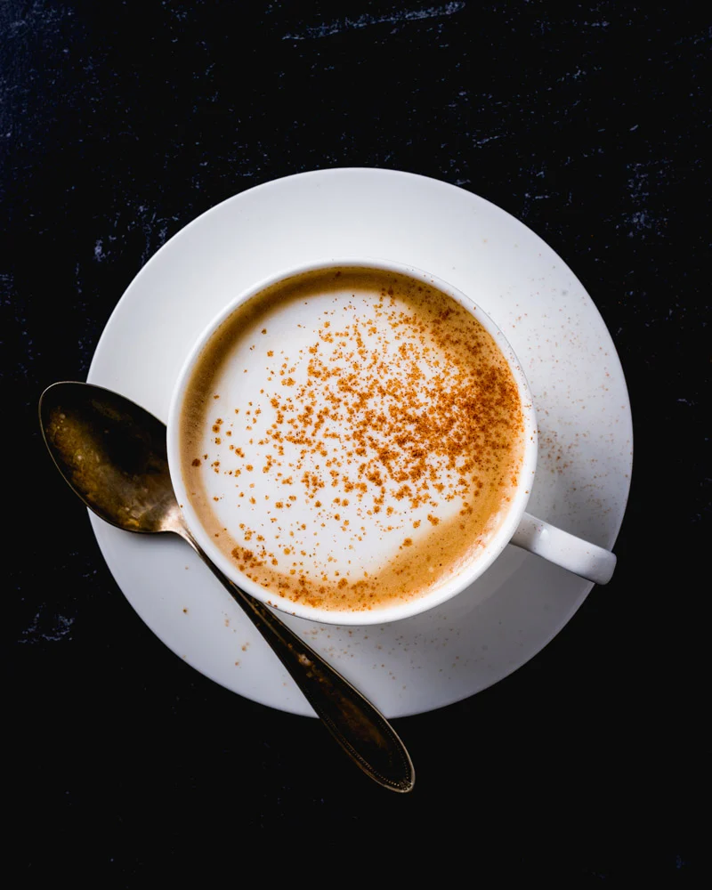

Cafe Au Lait
>
Description
A cafe au lait is a drink made from brewed coffee and steamed milk. It's similar to a caffe latte, although it doesn't involve espresso.
Ingredients
- Brewed coffee
- Steamed milk
Steps
- Combine equal proportions of steamed milk and brewed coffee.
- (Optional) Dust with cinnamon powder.